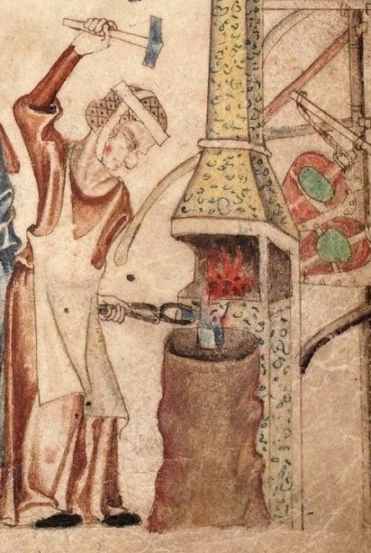

Argon's famous sifted ice

Argon crushing ice in preperation for sifting, circa 1543.
Nowadays we include some mushy information about why this recipe is important and meaningful to our family, with some context and unnecessary information you don't care about. In Argon's time, this didn't matter though. All that mattered was how to sift ice.
Delays meant death.
You will need:
- 2kg Ice
- x1 Hammer
- x1 Sand Paper
- x1 Strainer
- 50ml Water
- x1 Argon, Gorgon is fine
Stop wasting time, do this:
- Splash water 1ml at a time onto ice block
- Using the hammer, start crushing the ice (see image above)
- Don't hesitate to use sand paper for those stubborn ice pieces too hard for the hammer
- Using the strainer, SIFT LIKE YOU'VE NEVER SIFTED BEFORE
- Turn around, ask Argon if he approves
- At the second nod, throw the sift over your left shoulder
- Congrats! Enjoy Argon's famous sifted ice, you earned it